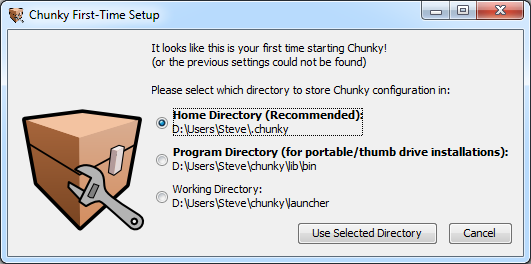
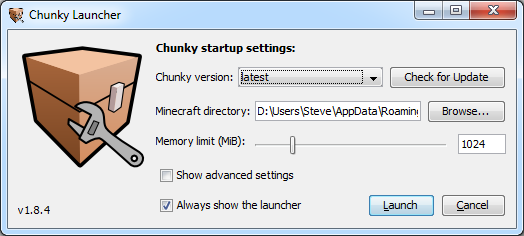
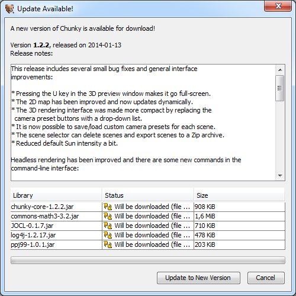

Search Documentation
Search Documentation
- About
 Gallery
Gallery- Getting Started
- User Interface
- Documentation
- Community
- Resources
Installing Chunky
Before installing Chunky you will need Java 8 update 40 or later. You can download Java here.
On Ubuntu, some other Linux distributions, and with Java 11 or greater you may have to install a JavaFX
library to be able to run Chunky. On Ubuntu 16.04, just have to install the
package openjfx (ie apt-get install openjfx).
There are several different ways to install Chunky. If you are using Windows then the Windows Installer is probably the best option. There is also a handy Mac Bundle for Mac users. However to use Chunky 2.X you need to use the ChunkyLauncher.jar.
For other platforms you can download the Chunky Launcher (ChunkyLauncher.jar). The launcher is a Java application that downloads and updates Chunky. You can start the launcher by double-clicking the downloaded Jar file, or typing this command in a terminal/command prompt:
java -jar ChunkyLauncher.jar
On later versions of OpenJDK Java, you might need to run it with --module-path and --add-modules like below:
java --module-path /usr/lib/jvm/java-11-openjdk/lib/ --add-modules javafx.controls,javafx.fxml -jar ChunkyLauncher.jar
You should put these arguments into the launcher too.
The first time you start Chunky or the Chunky Launcher, you will be asked to pick a settings directory for Chunky:

The recommended directory is usually the best option. Click "Use Selected Directory" to continue.
Next, you will see the Chunky Launcher. Even if you did not download the standalone launcher, this window will pop up:

If you downloaded only the launcher then you will have to update Chunky, otherwise can click "Launch" to start Chunky.
Updating Chunky
In the launcher, hitting the "Check for Update" button will make the launcher check for an update to Chunky online. This must be done the first time you start Chunky if you only downloaded the launcher.
If an update to Chunky was is available you will soon see the "Update Available!" window:

Click the "Update to New Version" button to start downloading the required files. When the download process has completed you can close the "Update Available!" by clicking "Close" and then, in the main launcher window, click "Launch" to start Chunky.